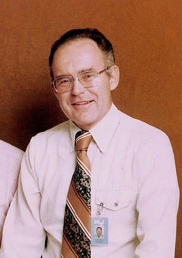
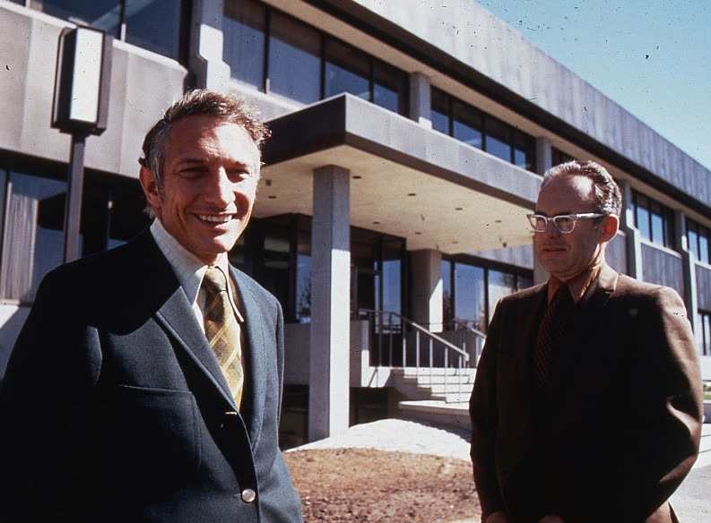
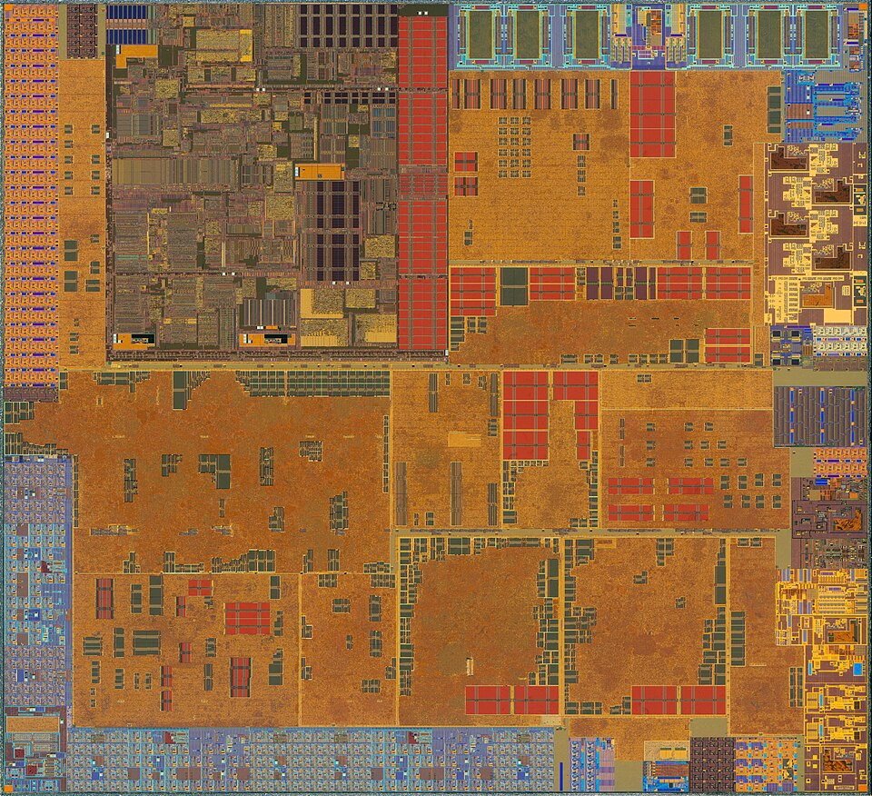
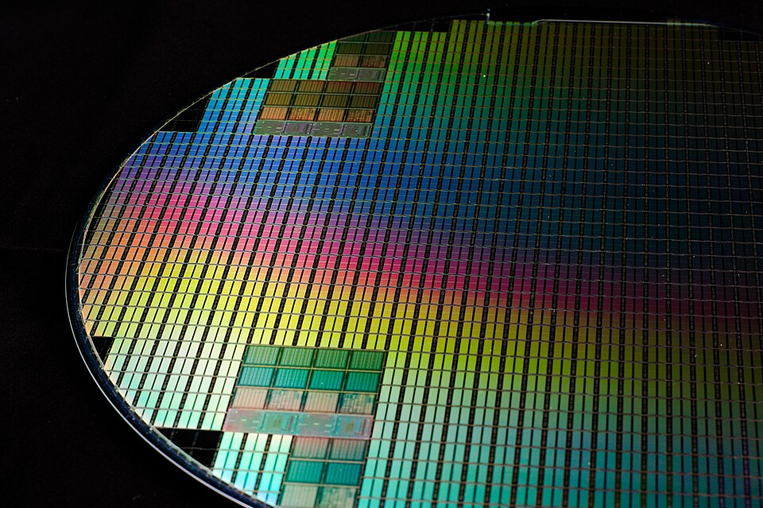

A lei de Moore
Uma frase escrita num artigo curto de revista, em 1965, acabou organizando o planejamento de uma indústria inteira por quase sessenta anos. Quando o áudio pedir, aperte Próximo.
O que ela não é. Não é lei da física. Ninguém descobriu nada na natureza: foi uma observação, quase um palpite bem informado. São 10 telas.

O que ele escreveu

Dobrar não é crescer
O ajuste que ele mesmo fez

Por que uma aposta se cumpriu por décadas
É uma previsão que se realiza porque as pessoas passaram a agir como se ela fosse verdade.
Ela não fala de velocidade
A velocidade parou de subir

Diminuir mais o transistor deixou de vir com o desconto de energia, e subir a frequência passou a significar calor demais pra dissipar. A indústria parou de perseguir um núcleo mais rápido e passou a pôr vários no mesmo chip.
Ainda sobe, mais devagar e mais caro

A contagem continuou subindo, mas o ritmo desacelerou e o custo por transistor parou de cair como caía. Sobraram poucas empresas no mundo capazes de fazer a geração seguinte.